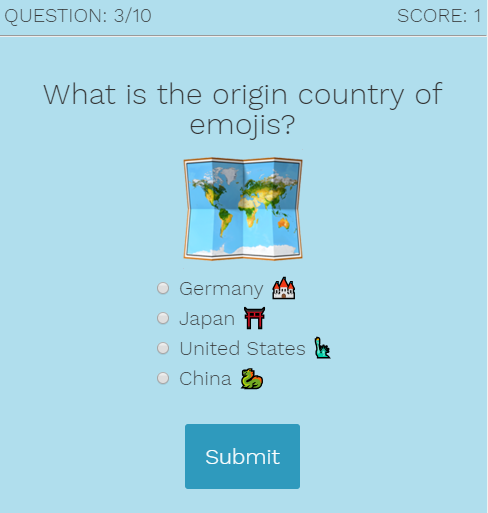
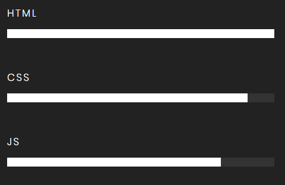

Tanna Lewis
Teacher, learner, analyst, and developer. And huge fan of other humans.
I am a Web Developer based in Denver, Colorado. I currently work at a pediatric hospital and oversee website transactional form content development and management, reporting and data analysis, and database integrity.
I am a lifelong learner with degrees in Information/Learning Technologies, Nonprofit Leadership, and Arabic Language.
That is a good reflection of my main areas of interest and professional work: I love coding, teaching, learning, sharing ideas in multiple languages, designing, analyzing, creating, reconstructing, and supporting my fellow mankind worldwide.

Know Your Emojis: jQuery-based quiz app. Areas of particular focus: user flow; iteration; a11y-friendliness; mobile-responsiveness; dynamicism (to easily alter quiz question content/quantity without affecting program.)

Email:lewis648t@gmail.com
Phone: 720-555-5555
Social links below!